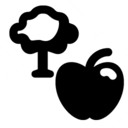
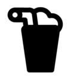
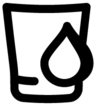
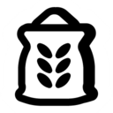

MECHANICS
Recycling
The game says recycling a building “clears up space and returns some of their resources”. What happens to the stock inside depends on the pile it sits in: finished goods waiting to be collected are recovered, and everything else is lost with the building.
Kept or lost
Each building holds its stock in piles. Some piles are marked as the building’s public output: the finished goods that villagers come and collect, like the Ice Pops at an Ice Pop Stand. When you recycle a building, those piles are recovered. The stock is left in piles on the ground and villagers carry it away; the game calls the job “Recovering the Ice Pop from the Ice Pop Stand”.
Every other pile goes with the building. That covers ingredients waiting to be used, part-made items, fuel for the fire, and anything a pub, kitchen or other gathering place has made but not yet served. A Winter Pub’s piles are all private, so recycling it loses its Wheatshine, its Wheat and everything in between.
What you get back: a finished building refunds 60% of each material it cost, rounded down: a Bakery that cost 9 Clay and 4 Stone gives back 5 Clay and 2 Stone. A building that is not finished yet gives back everything delivered so far. Each building page shows its refund.
Goals: lost stock still counts towards a Produce goal, because it was already made, but it no longer counts towards a Have goal.
Tip: 8 of these 54 buildings keep none of what they make: Brewery, Desert Cookhouse, Fondue Bar, Mead Hall, Open Kitchen, Porridge Cookhouse, Winery and Winter Pub. Let a pub or kitchen run empty, or stop its deliveries, before you recycle it. For the rest, only the finished product is safe; ingredients already delivered are lost. Fires such as the Bonfire make no stock, only warmth, so all they lose is unburnt firewood.
Unloading: where the stock lands
Pressing Recycle does not knock the building down straight away. The game works through it in order:
- It becomes a recycle site. The site is a workplace for up to 4 workers; the building’s own crew appears to carry over to it.
- The kept stock is carried out first. Site workers take it out one load at a time, and only during their working hours. The demolition does not start while any kept pile still holds stock, or while a villager or animal is still busy at the building.
- Each load goes to the nearest pile that can take it, if one is within 18 grid units of the building. For scale, a Windmill is 8 across. If nothing in reach can take it, the worker drops it in a new loose pile where the building stood, and your haulers have to move it again later.
- Then the building comes down. Each demolition spot needs 10 rounds of work, or 5 on the smaller sites (such as the Quarry, Market, Warehouse and Smoothie Stand). After that the refund appears and the building is gone.
Planning a recycle
- Before recycling, make sure a warehouse or other storage that takes the goods is within 18 units. Otherwise the stock piles up on the ground where the building was.
- The more kept stock there is, the longer the recycle takes, because nothing comes down until it is all out. A full Warehouse holds up to 216 items to carry first.
- Pubs and kitchens have nothing to carry out, so they come down quickly. Their stock is simply lost.
- Recycle-site workers keep shift hours, so a recycle started late in the day may wait for the next morning.
Worked examples
How long the unloading takes comes down to trips. In the code, one worker carries one item per trip, walks at 1.7 units a second (1.36 while carrying), and takes about 1.32 seconds to pick up and as long to put down (Logs, carried on the shoulder, take 3.58 each way). Each load is matched on its own: the worker looks for the nearest pile, measured from the building’s pile, that can take that item. A shift is 60% of a 300-second day, about 180 seconds of work.
A Lumberjacks’ Base with 30 Logs and 2 workers (15 trips each):
| Nearest pile that can take it | One trip | Whole unload | Where the stock ends up |
|---|---|---|---|
| A Warehouse 5 units away | 13.8 s | 3.4 minutes of work: about 1.1 shifts (work days) | In the Warehouse |
| A Warehouse 17 units away, just inside the reach | 29.7 s | 7.4 minutes of work: about 2.5 shifts (work days) | In the Warehouse |
| Nothing within 18 units | 8.5 s | 2.1 minutes of work: within one shift | Loose piles where the building stood, to be hauled again |
The surprise is the middle row. Storage just inside the 18-unit reach gives the slowest recycle, because every Log takes the longest trip that still counts. One step further away and the crew drops everything beside the building in about 2.1 minutes, but then the Logs sit loose on the ground. Storage close by gets both: a fast recycle and the Logs put away. A full crew of 4 halves every time in the table.
Two more effects change the sums. When the nearest pile fills up, the next load goes to the next nearest, which may be further away or out of reach. And once a loose pile has been started, it may itself be the nearest pile that can take the next Log, so the rest of the load lands beside it. Whether loose piles count is one of the open questions.
The pathological case: a full Warehouse. It holds up to 216 items across eight piles, and its crew of 3 has to carry every one before the building comes down (72 trips each):
| Nearest pile that can take it | One trip | Whole unload | Where the stock ends up |
|---|---|---|---|
| Another Warehouse 15 units away | 22.5 s | 27 minutes of work: about 9 shifts (work days) | In the other Warehouse |
| No storage within 18 units | 4 s | 4.8 minutes of work: about 1.6 shifts (work days) | 216 items loose on the ground |
So you can wait about nine game days for the Warehouse to come down, or get it down in under two days and leave 216 items on the ground for your haulers. Draw the Warehouse down first, or build the replacement right next to it. A Warehouse worker’s wheelbarrow carries 4 at a time; if the recycle crew keeps using theirs, these times shrink by about four, but the code does not settle that.
Estimates from stored speeds and animation lengths, not timed in play. They assume one item per trip, straight walking with no road bonus, and a crew that is not called away to eat or sleep.
Read from the game code, not timed in play. Which piles count as “can take it”, whether the 18 is straight-line or walking distance, and exactly where the new pile appears are still open questions.
Fake recycling
Experienced players mark a building for recycling without meaning to finish the job. Marking is free and can be cancelled. Nothing is destroyed and nothing is refunded until the demolition actually completes. Two tricks rely on this.
Mark it and leave it unstaffed: villagers stop going there
While a building is marked, the game treats it as gone for almost everything:
- Work stops. Its workspots are never ready, and its workers move over to the recycle site.
- Its stock leaves the village’s map of piles. Nobody fetches from it or stores into it.
- Villagers do not choose it. They will not sleep, idle or visit there, or deliver to it.
If the recycle site has no workers, nothing is carried out and the demolition never starts, so the building just sits there switched off. Use it to stop villagers trekking to a far-off house, gathering place or store, then cancel the recycle to bring it back. Cancelling hands the crew back to the building.
Mark it to empty it, then cancel
A workplace whose output pile is full stops working. Marking it sends the recycle crew to carry the kept stock (the finished goods) to storage, the same way a real recycle does. Cancel before the building comes down and you get it back empty, with its ingredients and part-made items untouched, because those are only lost when the demolition finishes.
Mind the timing. Demolition starts the moment the last kept item leaves. It needs only 10 rounds per spot (5 on smaller sites) of about 0.65 seconds each, plus 1 second to finish: a few seconds with a crew on hand. So cancel while an item or two is still in the pile. To see how many are left, count the items still listed for the building, or just look at it. The kept stock sits visibly on the building, like the Ice Pops on an Ice Pop Stand’s counter, so cancel when the last few are left.
Fake build sites: carry materials where you need them
Recycling a build site that is not finished gives back everything delivered so far, not 60%. Players use this to move materials. Place a cheap build site where the materials should end up, such as a Communal Plaza (7 Planks), and let the builders carry the Planks there. Then recycle the site before it is built: the Planks come back where the site stood. One player brought ten Planks up to a far corner of the map with fake plazas this way. Unloading also only happens in the crew’s working hours.
From the game code (version 31): marking sets the building’s recycle flag and moves its crew to the recycle site. While the flag is set, workspots refuse work, its own workers are released, its piles drop out of the pile map, and villagers’ sleep, idle, visit, storage and delivery choices skip the building. Cancelling clears the flag and moves the crew back. Demolition waits for the kept piles to empty; the other piles are destroyed only when it completes. Not timed in play.
Every building
| Building | Keeps | Loses | Carried out first |
|---|---|---|---|
| Bread | Flour, Stick and part-made items | up to 60 | |
| Beehive | Honey | part-made items | up to 4 |
| Beer Stand | everything stored in it | — | up to 162 |
| Bonfire | No stock: it makes warmth | Unburnt Stick | nothing |
| Book Workshop | Book | Animal Hide, Paper and part-made items | up to 12 |
| Bootmakers' Shop | Boots | Animal Hide, Stick, Log and part-made items | up to 33 |
| Bottle Factory | Bottle | Glass Pane, Stick and part-made items | up to 18 |
| Brewery | Nothing | Beer, Stick, Wheat and part-made items | nothing |
| Brickyard | Brick | Clay, Stick and part-made items | up to 32 |
| Canteen Factory | Canteen | Glass Pane, Reed Bunch, Stick and part-made items | up to 12 |
| Cheese | Stick and part-made items | up to 36 | |
| Chicken Coop | Egg | part-made items | up to 72 |
| Clay Pit | Clay | part-made items | up to 40 |
| Cookie | Egg, Flour, Stick and part-made items | up to 40 | |
| Nothing | Fruit, Manchamanteles, Stick, Veggie and part-made items | nothing | |
| Dried Meat | Meat and part-made items | up to 40 | |
| everything stored in it | — | up to 225 | |
| Firewood Yard | Stick | Log | up to 100 |
| Fishing Dock | Meat | — | up to 72 |
| Nothing | Cheese, Fondue, Stick, Veggie and part-made items | nothing | |
| everything stored in it | — | up to 40 | |
| Foresters' Hub | Log | part-made items | up to 80 |
| Gingerbread Man | Egg, Flour, Stick and part-made items | up to 40 | |
| Glassworks | Glass Pane | Stick and part-made items | up to 48 |
| everything stored in it | — | up to 81 | |
| Ice Pop Stand | Ice Pop | Fruit and part-made items | up to 24 |
| Lumberjacks' Base | Log | — | up to 48 |
| Luthierie | Ukulele | Log and part-made items | up to 12 |
| Market | everything stored in it | — | up to 162 |
| Mead Hall | Nothing | Honey, Mead, Stick and part-made items | nothing |
| Fruit and Nopalito | — | up to 72 | |
| everything stored in it | part-made items | up to 135 | |
| Nothing | Egg, Meat, Stew, Stick, Veggie and part-made items | nothing | |
 Orchard | Fruit | part-made items | up to 135 |
| Paper Mill | Paper | Log and part-made items | up to 16 |
| Pendant Craftshop | Pendant | Glass Pane and part-made items | up to 12 |
| Nothing | Barley Porridge, Stick and part-made items | nothing | |
| Press | Newspaper | Paper and part-made items | up to 36 |
| Quarry | Stone | — | up to 60 |
| Reed Harvester | Reed Bunch | — | up to 27 |
| Plank | Log and part-made items | up to 48 | |
 Smoothie Stand | Smoothie | Fruit | up to 16 |
| Stone Mine | Stone | Log and part-made items | up to 72 |
| Tailor | Coat | Animal Hide and part-made items | up to 12 |
| Trading Outpost (Evergreen) | Animal Hide and Glass Pane | Wheat and part-made items | up to 48 |
| Trading Outpost (Tropics) | Animal Hide and Wheat | Glass Pane and part-made items | up to 60 |
| Trading Outpost (Winterland) | Glass Pane and Wheat | Animal Hide and part-made items | up to 60 |
| Trappers' Hut | Animal Hide and Meat | part-made items | up to 54 |
| everything stored in it | — | up to 216 | |
 Well | Water | part-made items | up to 24 |
 Windmill | Flour | Wheat and part-made items | up to 54 |
| Winery | Nothing | Bottle, Fruit, Wine and part-made items | nothing |
| Winter Cabin | No stock: it makes warmth | Unburnt Stick | nothing |
| Winter Pub | Nothing | Wheatshine, Stick, Wheat and part-made items | nothing |
“Part-made items” are the in-between stages of a recipe, such as juice in a mould at the Ice Pop Stand. Storage buildings, the Market and farms keep everything their output piles hold, whatever the resource. Workplace tools such as baskets and cooking pots are left out. The construction refund is separate and not covered here.
Seen in play
Players place fake plaza build sites to get builders to carry materials to a spot, then recycle the sites before they are built, which brought ten Planks to where they were needed. player report, 2026-11-06
Matches the code: RecyclableBehaviour.GetRecycleValue returns the build site's pile counts (everything delivered) for an unfinished site, rather than 60% of the cost. A finished Basic House playtest showed the same full return for a half-built site (observation basic-house-demolition-refund). Where the returned items land is placed at the site's position in RecycleSiteBehaviour.OnWorkspotComplete; not separately timed in play.
Players fake-recycle buildings. Marking a building for recycling and leaving it unstaffed stops villagers from going there, which saves travel. Marking a full building to get its stock unloaded, then cancelling before it is demolished, empties it so it can work again. To time the cancel, players count the items left or watch the stock on the building itself, such as the Ice Pops still on the counter. player report, 2026-11-06
Fits the code: while marked, workspots refuse work, its piles leave the pile map and villagers skip the building. Unloading needs recycle-site workers, and demolition waits until the kept piles are empty. Cancelling (RestoreRecycleSiteAction → UnmarkForRecycling) moves the crew back.
Stock destroyed by recycling still counts towards Produce goals, because it was already made, but it no longer counts towards Have goals. player report, 2026-11-03
Not tested yet
- Which piles a worker will carry recovered stock to: warehouse slots only, or also loose piles of the same thing.
- Whether the reach is straight-line or walking distance, and where the new loose pile appears.
- How long unloading takes in play, for example a full Ice Pop Stand with and without a warehouse in reach.
- Whether the building’s own crew moves to the recycle site.